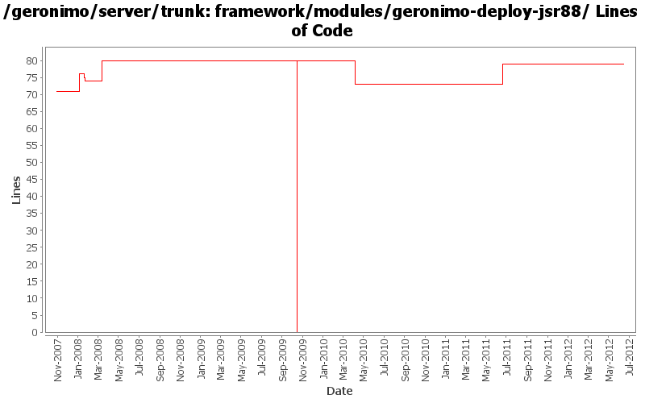

[root]/framework/modules/geronimo-deploy-jsr88
 src
(0 files, 0 lines)
src
(0 files, 0 lines)
 main
(0 files, 0 lines)
main
(0 files, 0 lines)
 java
(0 files, 0 lines)
java
(0 files, 0 lines)
 org
(0 files, 0 lines)
org
(0 files, 0 lines)
 apache
(0 files, 0 lines)
apache
(0 files, 0 lines)
 geronimo
(0 files, 0 lines)
geronimo
(0 files, 0 lines)
 deployment
(0 files, 0 lines)
deployment
(0 files, 0 lines)
 plugin
(2 files, 404 lines)
plugin
(2 files, 404 lines)
 eba
(1 files, 39 lines)
eba
(1 files, 39 lines)
 factories
(2 files, 316 lines)
factories
(2 files, 316 lines)
 jmx
(4 files, 1085 lines)
jmx
(4 files, 1085 lines)
 local
(7 files, 1145 lines)
local
(7 files, 1145 lines)
 remote
(5 files, 457 lines)
remote
(5 files, 457 lines)

| Author | Changes | Lines of Code | Lines per Change |
|---|---|---|---|
| Totals | 21 (100.0%) | 116 (100.0%) | 5.5 |
| djencks | 7 (33.3%) | 91 (78.4%) | 13.0 |
| jdillon | 3 (14.3%) | 7 (6.0%) | 2.3 |
| rwonly | 1 (4.8%) | 6 (5.2%) | 6.0 |
| dwoods | 1 (4.8%) | 6 (5.2%) | 6.0 |
| rickmcguire | 2 (9.5%) | 2 (1.7%) | 1.0 |
| gawor | 1 (4.8%) | 2 (1.7%) | 2.0 |
| xiaming | 1 (4.8%) | 1 (0.9%) | 1.0 |
| kevan | 3 (14.3%) | 1 (0.9%) | 0.3 |
| prasad | 2 (9.5%) | 0 (0.0%) | 0.0 |
Update trunk version to 4.0.0-SNAPSHOT
1 lines of code changed in 1 file:
GERONIMO-5764 Support Bundles Deployment
6 lines of code changed in 1 file:
[maven-release-plugin] prepare release 3.0-M2
1 lines of code changed in 1 file:
[maven-release-plugin] prepare branch 3.0-M2
1 lines of code changed in 1 file:
GERONIMO-5290 fix many of the deprecation warnings from maven 3
5 lines of code changed in 1 file:
some dependency updates + fixing -Dstage=bootstrap broken by nexus profile
2 lines of code changed in 1 file:
GERONIMO-4916 step 2 move sandbox osgi framework into trunk
80 lines of code changed in 1 file:
GERONIMO-4916 step 1 remove old framwork
0 lines of code changed in 3 files:
GERONIMO-4655 upgrade version to 3.0-SNAPSHOT, make a few things more consistent
1 lines of code changed in 1 file:
found another depend missing by running testsuite with a clean repo
6 lines of code changed in 1 file:
Update LICENSE and NOTICE files. Merge from 2.1 branch
0 lines of code changed in 2 files:
upgrade trunk to 2.2-SNAPSHOT
1 lines of code changed in 1 file:
(GERONIMO-3747) Fixed parentage of module groups, though most still need to have their modules put into the proper groupId
Updated groupId of *everything* under framework/** to org.apache.geronimo.framework, and did my best to update all references
6 lines of code changed in 1 file:
(GERONIMO-3771) Moved maven-plugins/* to buildsupport/*, updated groupId to org.apache.geronimo.buildsupport
1 lines of code changed in 1 file:
Remove relativePath, pom tidy
0 lines of code changed in 1 file:
GERONIMO-3732 steps 1, 2. Move plugin management and some jsr88 base code into a new module
5 lines of code changed in 1 file:
* <name>Geronimo Modules :: foo</name>
0 lines of code changed in 2 files: